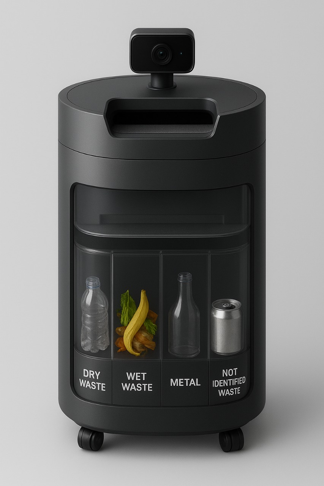

About the Project
This Smart Waste Management System classifies and sorts waste into four compartments: Dry, Wet, Metal and Unknown. The system uses a combination of sensors and machine vision to detect and actuate sorting paths.
Hardware
- Microcontrollers: Arduino Mega 2560, ESP32-S3 AI camera
- Sensors: Proximity, IR, break-beam, ultrasonic, weight, moisture
- Actuators: Vibration motor, servo, stepper motor
- Power: Solar panel
Working
Items enter via conveyor → sensors classify waste → AI camera identifies type → motors sort into bins.
